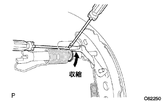

Parking brake cable ASSY No.3 (4WD) Remove |
| 1. Battery minor Starminal Cut off |
reference| 2. Remove the front seat Assy RH |
Operate the seat track adjusted handle to make the front seat Assike a rear mole.
 |
Remove the claws of the front seat leg cover and remove the two bolts on the front side.
Operate the seat track adjusted handle to make the front seat associate a front mole.
Remove the claws of the front seat leg cover and remove two bolts on the rear side.
Remove the wire harness and separate the connector.
Remove the front sheet Assing RH from the vehicle.
| 3. Remove the rear seat Batsuku ASSY |
 |
Make the rear seat back in advance.
Use the clip remover to remove the two clips.
 |
Turn over the rear seat back cover.
Remove the two bolts and remove the rear seat back ASSY.
| 4. Remove the rear seat cushion assy |
 |
Press the clip lever in the direction of the figure, lift the front end of the rear seat cushion ASSY and remove the clip.
Remove the hook.
Remove the seat belt and remove the rear seat cushion ASSY.
| 5. The front door scuff plate RH is removed |
 |
Pull it up by hand, remove the claws, and remove the front door skaf plate RH.
| 6. Remove the cowl side trim board RH |
 |
Remove the claws and studs and remove the cowl side trim board.
| 7. Front door opening trimweather strip RH disconnection |
| 8. |
 |
Remove the claws and remove the wrap belt Otaanca cover.
| 9. Remove the front seat outa belt assemble (floor anka part) |
Remove the bolt and remove the front seat Outabelt Assy RH (floor anka).
| 10. Rear seat 3 point type belt ASSY OUT RH removed (floor anka part) |
Remove the bolt and remove the front seat Outabelt Assy RH (floor anka).
| 11. Remove the rear seat back hinge SUB-ASSY RH removed |
 |
Remove the bolt and remove the rear seat back hinge RH.
| 12. Side No.1 Trim ASSY RH removed |
 |
Pull it in the inside of the vehicle by hand, remove the clip and claws, and remove the side No.1 trim ASSY RH.
| 13. Remove the front floor carpet ASSY FR |
Turn the front floor carpet ASSY FR.
| 14. The front floor silence pad SUB-ASSY RR RH is removed |
Remove the front floor sirensa padlier RH.
| 15. Wire gathing nut No.1 loosening |
 |
Loose the rock nut and the parking brake wire gathering nut No.1 on the parking brake interior lever.
| 16. Parking brake cable ASSY No.3 cut off |
Parking brake cable No.3 is separated from the parking brake cable equalizer.
| 17. Parking brake cable ASSY No.2 removed |
Cut the parking brake cable No.2 from the parking brake cable equalizer.
| 18. Remove the rear tire |
| 19. Remove the rear brake drum (LH side) |
|  |
Unlock the parking brake and remove the rear brake drum.
| 20. Remove the rear brake drum (RH side) |
| 21. The brake shoe should be removed (LH side) |
 |
Front side
Use the SST to cut the tension spring from the brake shoe Assy and remove the parking brake shoe trattle set LH.
 |
Use the SST to remove the rear bra lighse hooded hold down spring cup, rear bra lhape hold hold down spring, and rear bra lighthoeu holddown spring pin.
Cut the rear brake zeuling spring and remove the brake shoe (front side).
 |
Rear side
Remove the rear brake zeuling spring from the brake shoe (rear side).
Use the SST to remove the rear bra lighse hooded hold down spring cup, rear bra lhape hold hold down spring, and rear bra lighthoeu holddown spring pin.
Use the needle nose pliers to separate the parking brake cable ASSY No.3 and remove the brake shoe (rear).
| 22. The brake shoe should be removed (RH side) |
| 23. Parking brake cable ASSY removes |
Parking brake cable ASSY No.3 removed
Remove 5 bolts and remove each cable bracket from the body.
Remove the bolt and remove the parking brake cable ASSY No.3 from the backing plate.
Parking brake cable ASSY No.2 removed
Remove the four bolts and remove each cable bracket from the body.
Remove the bolt and remove the parking brake cable Assy No.2 from the backing plate.